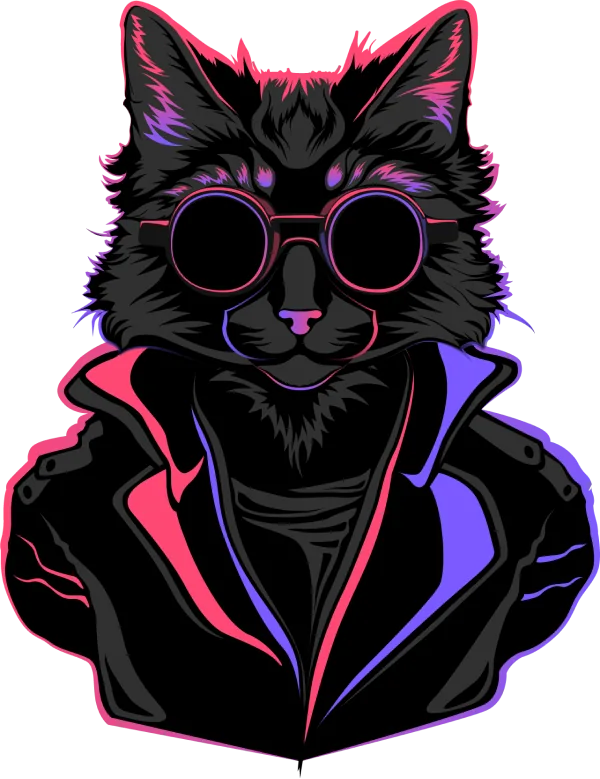

Infrastructure and NFTfi since 2022
Catnip for the decentralized world of tomorrow.

Community
Find us across the interchain.
Every official GATA channel, in one place. Everything else is not us.
NFTs
Our collections.
GATA NFTs
Souvenirs / Honorary
Infrastructure
Validators, Explorer, Nodes, Indexer, Network monitors.
Mainnet
Testnet
Ready to claim your rewards?
NFT rewards, Staking perks, GATA loyalty and Raffles Live in the GATA reward app.
Enter Reward Hub →